Porsche · 912 · 1965
912R
A restoration, dissected

De Caires Classics · Built in England
Foreword
A car worth explaining
This is the complete account of a single restoration: what the car was, what was found inside it, and every decision taken to bring it back. It is written to be read from the first page, and kept as a record of the work.
Some cars are simply serviced and sold. This was not one of them. What began as a fair deal on a rough but promising 912 became a near-total rebuild, most of it carried out by one pair of hands. The pages that follow tell that story in order, and then take the car apart system by system so that nothing is left unsaid.
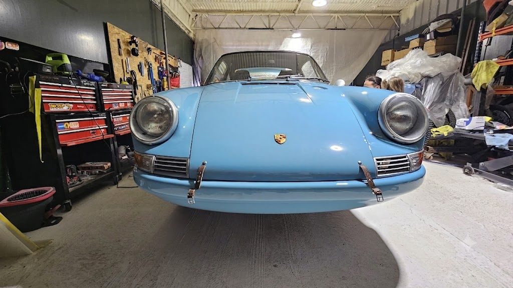
What follows
- Why a 912
- As found
- Body and structure
- Colour
- The engine
- Cooling, fuelling and exhaust
- Running gear
- Wheels and tyres
- Interior
- Glass, mirrors and rubbers
- Lights
- Electrics
- The engine bay, finished
- Character and faithfulness
- The hardest parts
- Where it came from
- Full specification
- The man who built it
- For the next owner
01 · The car
Why a 912
The badge first, the bargain second, and a rebuild no one had bargained for.
It began with the badge. A love of the Porsche marque, and a 912 that came up at a good price: on paper, a good deal. The car did not look bad from the outside. It was only later, once it was stripped, that the true size of the job revealed itself, and a fair deal turned into a very large one.
The 912 was Porsche's more attainable car, built so that a driver who could not stretch to a 911 could still stay with the marque. It ran from 1965 to 1968, with a final fuel-injected 912E in 1969, after which the model was dropped and the factory's attention went wholly to the 911. That short life is why the car is rare today.
Mechanically it shares the 911's floorpan and body; the interior is much the same too. The difference is behind the rear axle, where a flat-four sits in place of the flat-six. Less weight hung out at the back changes the whole feel of the car. It is not as fast as a 911. To the people who drive them, it handles better for exactly that reason: a different sensation from the same car.
| Built | 1965 to 1968 (912E in 1969) |
|---|---|
| Place in the range | The affordable Porsche, sold below the 911 |
| Shared with 911 | Chassis, body and much of the interior |
| Engine | Air-cooled flat four, in place of the 911's flat six |
| The trade | Less power, less weight over the rear, sharper balance |
I always loved the Porsche brand. The 912 handles completely differently, less weight in the back. It is a different feeling of the same car.
Umberto
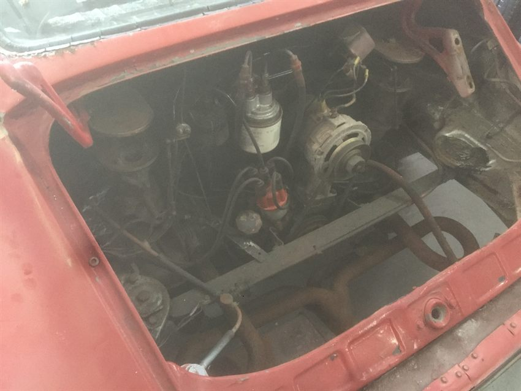
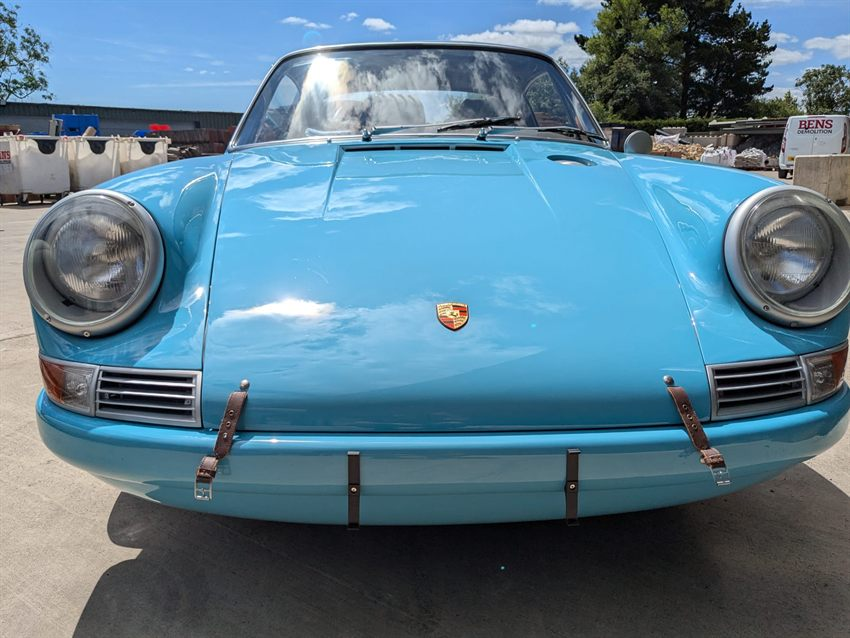
02 · Condition on arrival
What the carpets were hiding
Sound to the eye, and almost gone beneath.
The car flattered to deceive. It arrived red, the colour it had worn since New York; the interior was in place, carpets and all, and the underside had been painted, so at a glance it looked like a manageable project. That impression lasted precisely as long as it took to start taking things out.
Underneath, the shell had rusted down. Roughly the lower half of the car would have to be remade. It was, honestly, a job large enough that at one point the reasonable option was to sell the project on rather than see it through. It was kept. The compensation, beyond the finished car, was a deep and lasting understanding of how these bodies are built, knowledge that carries straight across to the 911, since the two share the same structure.
It is worth saying plainly what all of this means for the car today. Nothing described on this page was patched over or disguised. Where metal had gone it was cut out entirely and replaced, on a jig set to the factory blueprints, so the corrosion left the car with the panels that carried it. A shell this far gone had to be rebuilt rather than tidied, which is precisely why so much of this car is now new steel, correctly located, with nothing old sealed in behind it to be discovered later. The condition set out here belongs wholly to the car that arrived in 2019; all that survives of it is these photographs.
- Presented well: trimmed interior in place, underside painted, no obvious alarm from outside.
- Reality once stripped: corrosion through roughly the bottom half of the shell.
- Upper body: largely sound and saved.
- Lower body: substantially gone, requiring fabrication rather than repair.
- Engine: seized, with a failed piston (covered in full later).
- Air ducting: many of the cooling tin panels that direct air over the engine were missing.
- Wiring: the original loom found burnt through.
The car outside didn't look that bad. But when I started taking things out, I found what they were hiding. It was really bad.
Umberto
What the condition on arrival means now
Every item in the list above was answered by replacement rather than repair: the floors, sills and lower body remade in new steel over a jig built to Porsche's blueprints; the engine rebuilt around a specialist-welded case with its oil circulation improved; the burnt loom discarded and a new one made by hand. None of it is inherited by the next owner. The work a car of this age eventually asks for has been done here, once and completely, and photographed at every stage; the pages that follow are the record of it.
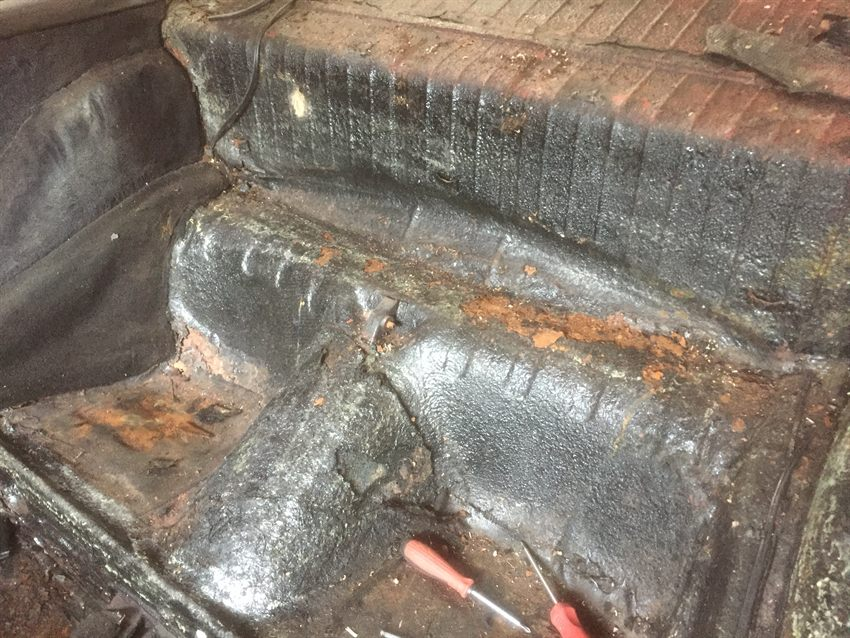

03 · Structure and body
Made true again
First a jig to hold the car honest, then most of a new shell built around it.
The first task was not to cut, but to hold. A jig was built so that every suspension point sat exactly where Porsche intended, using the factory blueprints as the reference. With the car locked to a structure known to be true, the new metal could be formed around it with confidence. Only then did the cutting begin. The upper body survived; from the waist down, most of the shell was remade.
Panel by panel
Roughly seventy percent of the replacement panels were bought in. The remainder were fabricated by hand, and throughout, as much original metal was saved as could honestly be kept. Where weight could be removed, it was: several outer panels are glassfibre, reinforced with carbon fibre, a deliberate saving on a car that was never going to be the most powerful on the road.
| Front wings | Glassfibre, carbon-fibre reinforced new |
|---|---|
| Bonnet | Glassfibre, carbon-fibre reinforced new |
| Both bumpers | Glassfibre, carbon-fibre reinforced new |
| Deck lid | Glassfibre, carbon-fibre reinforced new |
| Doors | Original doors repaired, fitted with new outer skins repaired |
| Rear wings | Two new wings, flared over the rear wheels, RSR in spirit new |
| Floor / lower body | Largely fabricated by hand over the jig rebuilt |
| Panels bought in | Approximately 70 percent of replacements |
| Panels fabricated | The remainder, by hand |
A racer's detail: the fuel filler
The filler flap was deleted from the wing, and the wing made without it. The filling neck was relocated forward, up by the bonnet, purely because it belongs there: a competition touch on a road car.
I made the jig from the blueprints, and I tried to save as much as I could of the original car.
Umberto
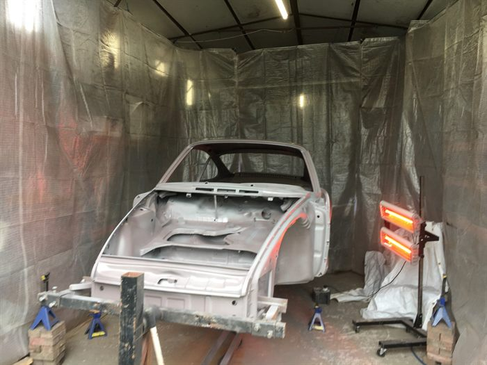
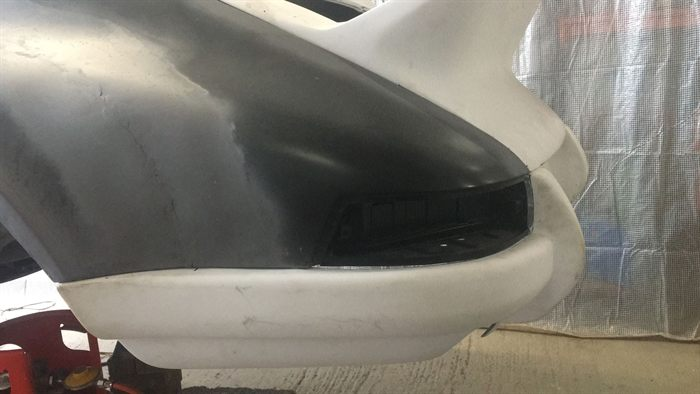
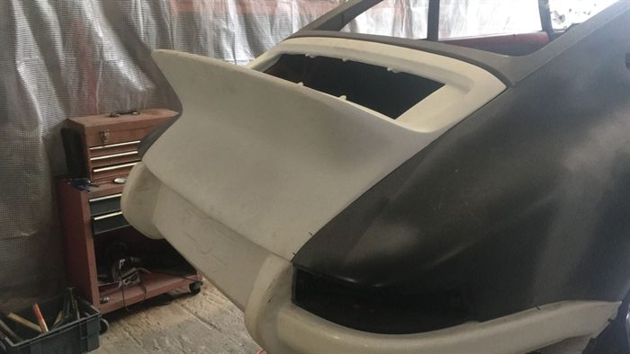

04 · Paint and identity
A plate that matches the car
The blue is a genuine Porsche factory colour, not an invention. It is not strictly correct to a 1965 car: this is an early example, and the shade entered the catalogue roughly two years later. But it remains a period 912 colour, and it is exactly the kind of colour that, then as now, was a paid-for special order rather than a standard choice. That small extravagance suits the car.
The car did not arrive blue. It arrived red, as its American registration recorded and as the early photographs show, though its original Karmann body plate carries the number for a blue, Farbton 6608. Rather than leave the plate contradicting the car, a new Karmann plate was made to the same pattern, carrying the same body number and the new paint number: a small, careful piece of honesty, and the sort of detail that tends to be skipped.
| Origin | Genuine Porsche factory colour, special order |
|---|---|
| Period | A 912-era colour, roughly two years later than this car's build |
| Name / mix | Crystal Blue, mixed by Glasurit |
| Paint number now | Farbton 6825, on the current body plate |
| Paint number as built | Farbton 6608, on the original body plate (a blue) |
| Body number | Karmann 452 279, matching the chassis |
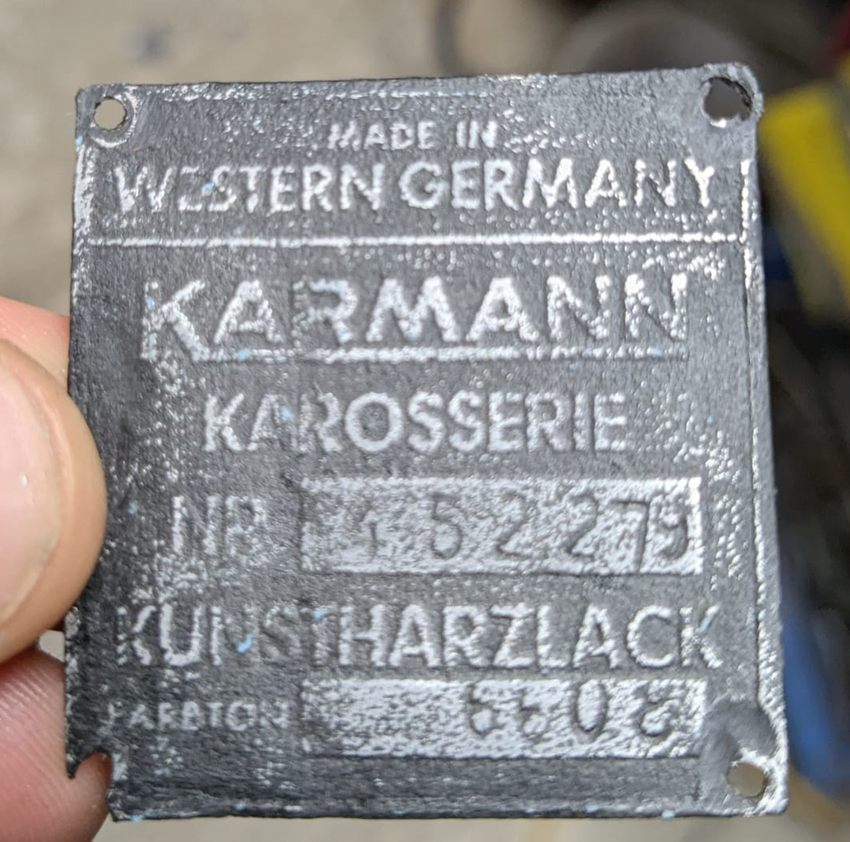
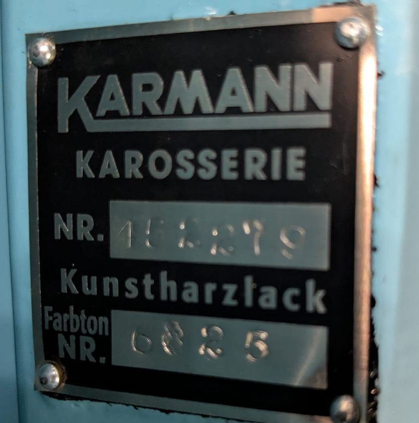
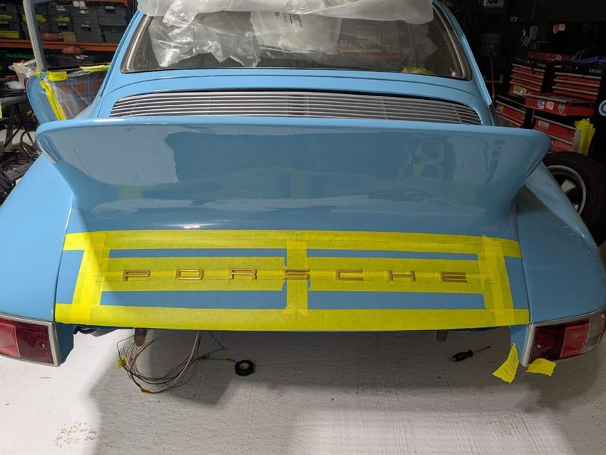
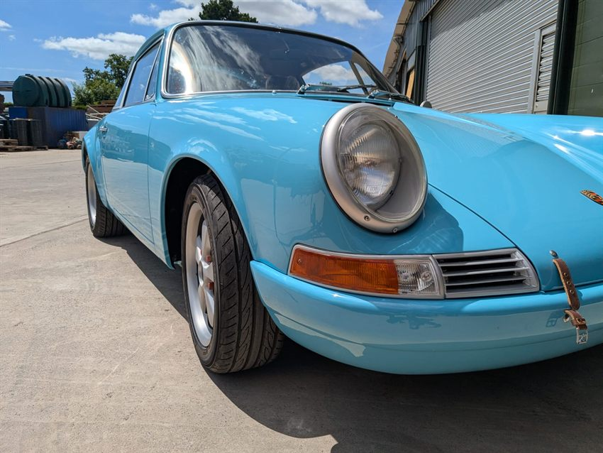
05 · The engine
Two litres, and almost entirely new
A seized, cracked motor became the excuse to build a better one.
The engine arrived seized. A piston had let go, and with it the cylinders and heads were beyond use. Worse, the three-piece aluminium crankcase, the housing on which everything else is built, was cracked. This is a known weakness on these units, related to how the oil circulates. The case was sent away to be welded by specialists, the sort of meticulous work that must be done exactly right or not at all, and the oil circulation was improved to address the cause rather than only the symptom.
Faced with rebuilding so much of it in any case, the decision was to build something better than standard. Capacity rose from 1.6 to 2.0 litres. Nearly everything inside is new; the single significant survivor is the crankshaft, which was sound, and was balanced and kept.
| Capacity | Enlarged from 1.6 to 2.0 litres uprated |
|---|---|
| Crankcase | Original three-piece alloy case, crack specialist-welded, oil circulation improved rebuilt |
| Heads | CNC-machined, sourced in Switzerland new |
| Pistons | Racing pistons, balanced and weight-matched new |
| Cylinders | New, matched to the heads new |
| Connecting rods | Carrillo rods, balanced and weight-matched new |
| Crankshaft | Original, checked good, balanced retained |
| Camshaft | Street-performance cam new |
| Timing gears | Straight-cut (more performance, a little more noise) new |
| Lifters | Uprated new |
| Pushrods | New new |
| Valve covers | New new |
| Intake manifolds | New, for the larger carburettors new |
| Carburettors | Twin Weber 44 IDF, larger than standard new |
| Clutch | Uprated, balanced uprated |
| Cooling tinware | Missing air-guide panels replaced new |
| Engine number | 746389 |
Practically the engine inside is all new. The only thing that isn't new is the crankshaft, as the crankshaft was in good condition.
Umberto
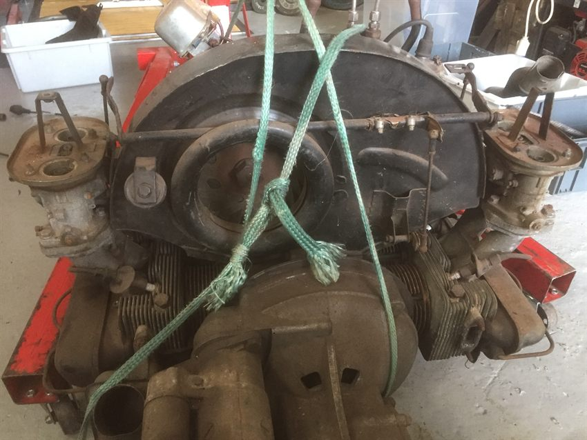

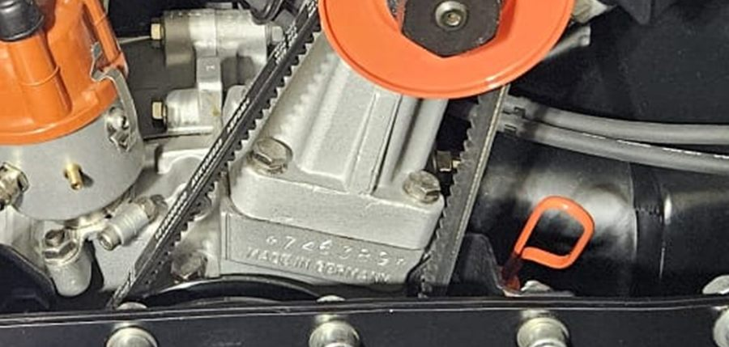
Engine number 746389, stamped in the alloy and visible in the finished bay, behind the crankshaft pulley.
06 · Cooling, fuelling and exhaust
Built for the road it will actually meet
Choices made for a car that now has to sit in traffic these engines never anticipated.
- Exhaust: stainless steel throughout.
- Fuel pump: the original mechanical pump, never the most reliable part, removed in favour of an electric pump.
- Fuel filter and regulator: a Malpassi filter with an integral adjustable pressure regulator, so fuel pressure can be set precisely.
- Air filters: two new K&N filters.
- Primary oil cooling: an aluminium oil cooler.
- Secondary oil cooling: an additional remote oil cooler with its own electric fan, added specifically so the oil stays cool in the modern traffic these cars were never designed to sit in.
Why a second cooler
These cars were built for open roads, not for crawling in queues for hours. The remote cooler and fan are an honest concession to how the car will be used today, there to keep the oil temperature down and protect the freshly built engine.
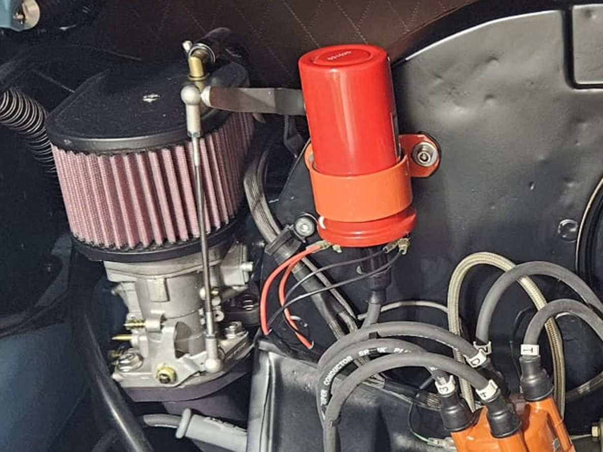
07 · Running gear
Everything off, everything through
Suspension, brakes and gearbox, each taken fully apart and rebuilt.
The whole car was taken down. Every suspension component was stripped, then replaced or refinished, powder-coated, and reassembled. Some original parts earned their place back; where an item was worn, or simply prudent to renew, it was renewed.
| Bushes | Around 80 percent polyurethane, firmer, for sharper handling new |
|---|---|
| Dampers | Four new Koni dampers, all round new |
| Torsion bars | Original, checked good and kept (a low-stress part) retained |
| Trailing arms | Original, powder-coated; one front lower arm replaced retained |
| Brake calipers | New new |
| Brake pads | New new |
| Brake discs | New new |
| Handbrake shoes | New new |
| Handbrake cables | New new |
| Clutch cable | New new |
| Finish | All refurbished parts powder-coated |
The gearbox
The gearbox was completely rebuilt. The good gears were retained; the worn ones, reverse among them, were replaced. On principle, every bearing was renewed, even those that looked serviceable, because with the box already apart there was no sense in trusting an old bearing back into a fresh build.
- Rebuild: stripped, cleaned, and reassembled completely.
- Gears replaced: the worn gears, including reverse.
- Gears retained: those found to be good.
- Bearings: all renewed, without exception.
- Fuel tank: new, with a new sender.
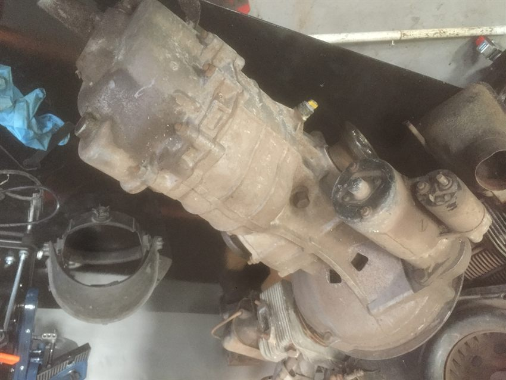
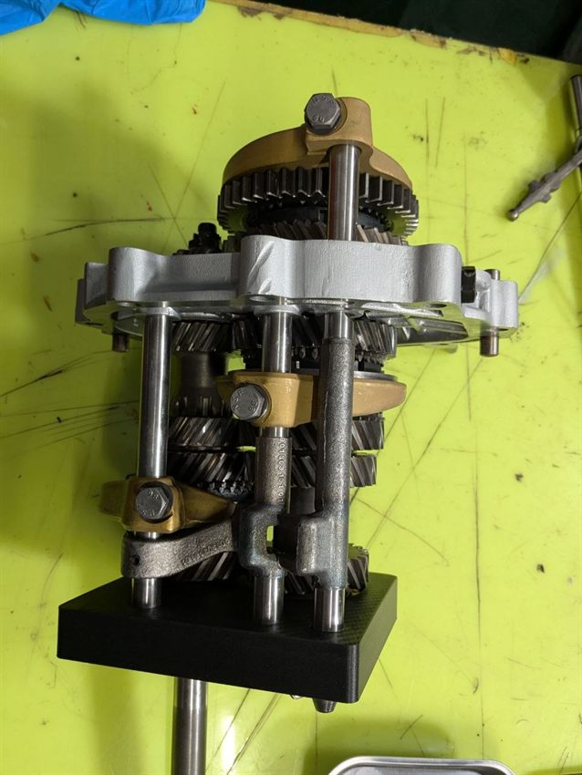
08 · Wheels and tyres
A little wider, for the way it drives
The car arrived on a mismatched set, two of them oversized. A new set was bought in its place. The tyres are marginally wider than standard and on a lower profile (a 55 section in place of the original 60), which keeps them close to the original look while adding grip. The original rear tyres were narrow; a slightly wider tyre at the back improves the handling, which was the point. That they also look right is a welcome bonus.
| Wheels | New matched set new |
|---|---|
| Tyres | Slightly wider, lower profile (55 section in place of 60) |
| Reason | Grip and handling, especially at the rear; close to original appearance |
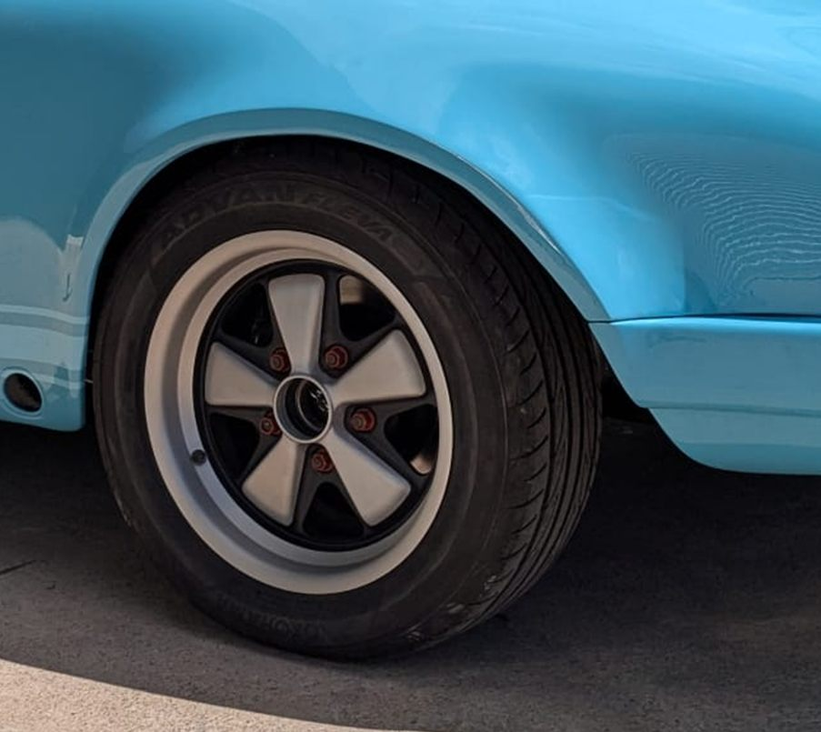
09 · Interior
The cabin, remade to a plan
Where the car stops being a restoration and becomes a personal statement.
If the body stays close to what Porsche made, the interior is where the car becomes personal. The starting point was the blue. From there came a Scottish tweed whose orange and blue sat perfectly against it, and an orange Alcantara chosen to match the tweed. The pairing carries an unspoken echo of the most famous racing livery in blue and orange, arrived at, by the builder's own account, mostly because the colours simply looked right together.
The seats were trimmed by a trusted upholsterer. The Alcantara chosen is not, strictly, the ideal grade for seats and leaves a slight crease, but it was the right orange, and the result was worth it.
Seats and safety
In place of a roll cage, which would have made a track car of something never meant to be one, there is a discreet reinforcement bar, cut in and added, with a four-point harness fixed to it. The two rear seats, the tiny ones that fit no adult and were only ever meant for children, were remade in the same materials.
Floor and sound
There is no carpet. The blue floor is left deliberately visible, dressed with aluminium mats painted blue to match. Hidden beneath sits Dynamat sound-deadening for the noise and vibration an aluminium-and-steel car will make. The front footwells are lined with aluminium panels and covered in a black diamond-pattern vinyl, so everything the eye reaches is tidy.
Dashboard and instruments
A new lower dashboard section was made, with a band of the same cloth running across it around the ignition and the lighter, in place of the original aluminium trim, simply because it looks better. This was a three-gauge car; two gauges were added, oil pressure and charging, the two worth watching.
The steering wheel
It arrived with an unattractive Momo wheel. An original was found but set aside as too large at 40cm. A 38cm was tried, and finally the current wheel chosen: a deep-dish four-spoke that brings the rim toward the driver for a more purposeful position, yet stays close in look to the original four-spoke, so the cabin keeps its period character.
Woodwork
Two small pieces of hardwood warm the whole: a gear knob, and a matching knob on the heater lever, cut from the same wood and to the same pattern.
| Upholstery | Blue leather, orange Alcantara, Scottish tweed |
|---|---|
| Front seats | Retrimmed by a specialist upholsterer |
| Rear seats | Remade in matching materials |
| Safety | Reinforcement bar with four-point harness (no roll cage) |
| Floor | No carpet; blue-painted aluminium mats over Dynamat |
| Footwells | Aluminium panels, black diamond-pattern vinyl |
| Door panels | Made in aluminium |
| Rear panels | Made to cover the rear seat area |
| Dashboard | New lower section with a cloth band |
| Instruments | Original three, plus added oil-pressure and charging gauges |
| Steering wheel | Deep-dish four-spoke, original in character |
| Woodwork | Hardwood gear knob and matching heater knob |
The Alcantara leaves a little crease, but it was the right orange. I loved how the colours match together.
Umberto


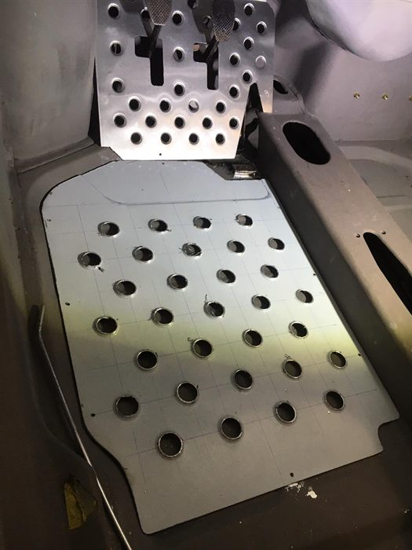
10 · Glass, mirrors and rubbers
The parts you notice last
- Windscreen: renewed. The original had begun to delaminate, a film creeping between its two layers, though it had not actually cracked.
- Rear screen: original, saved and refitted.
- Door and rear quarter glass: original, retained.
- Rubbers: every rubber renewed. There is no old rubber anywhere on the car.
- Frames: door glass frames and rear quarter window frames removed and powder-coated.
- Mirror: a single mirror on the driver's side, where it is needed to overtake, a new part of the correct old type, on a car that arrived with none.
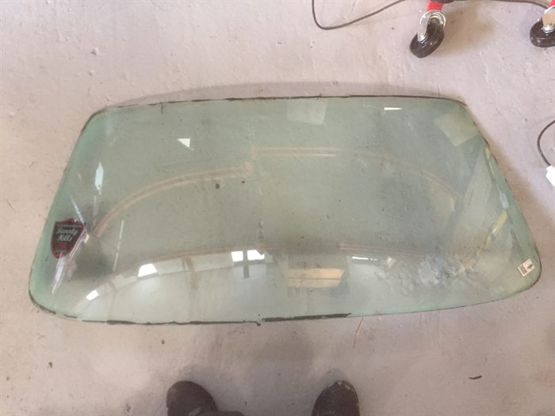
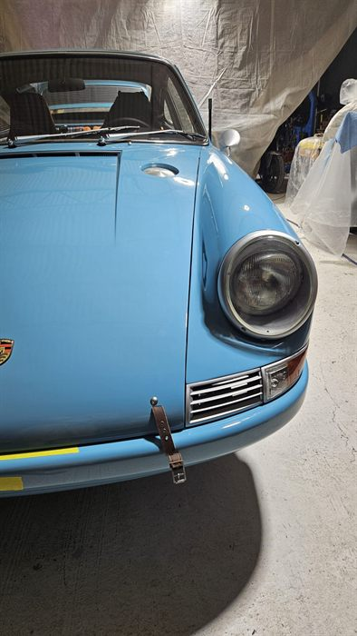
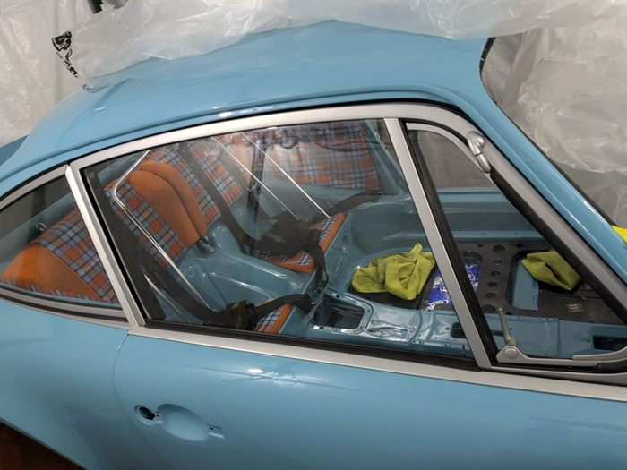
11 · Lights
A resourceful pair of headlights
The standard 912 headlights, with their large lenses, were not to the builder's taste, and the clear-glass lamps he wanted are no longer made. The solution was to take headlight units from a 356 and modify them to fit the 912's holders, giving the clear glass with the pattern set inside, exactly the look intended.
- Headlights: 356 units modified to fit; clear glass, internal pattern.
- Front indicators and surrounds: restored, frames powder-coated in their silver finish.
- Rear lights: housing the stop, reverse and indicator functions; powder-coated, with new lenses and bulbs.
And where nothing could be adapted, it was printed
The headlights show the method, but some parts did not leave even that option. A handful of the small fittings a 912 needs are no longer made and no longer turn up, at any price. Rather than accept a wrong-looking substitute or leave a gap, those pieces were measured, modelled and 3D-printed in the workshop, then finished so that they read as part of the car. It is a tool from this decade used to keep a 1965 Porsche correct, and it is the reason the car is complete rather than nearly complete.
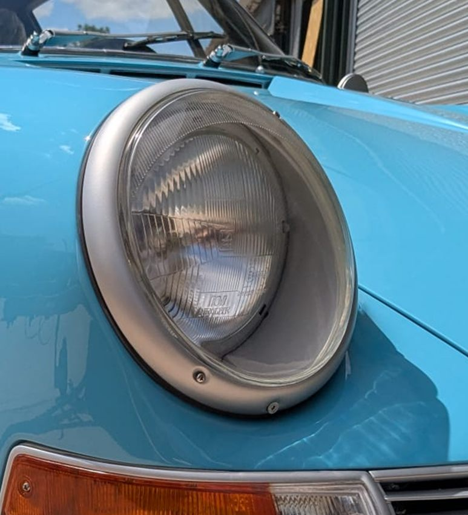
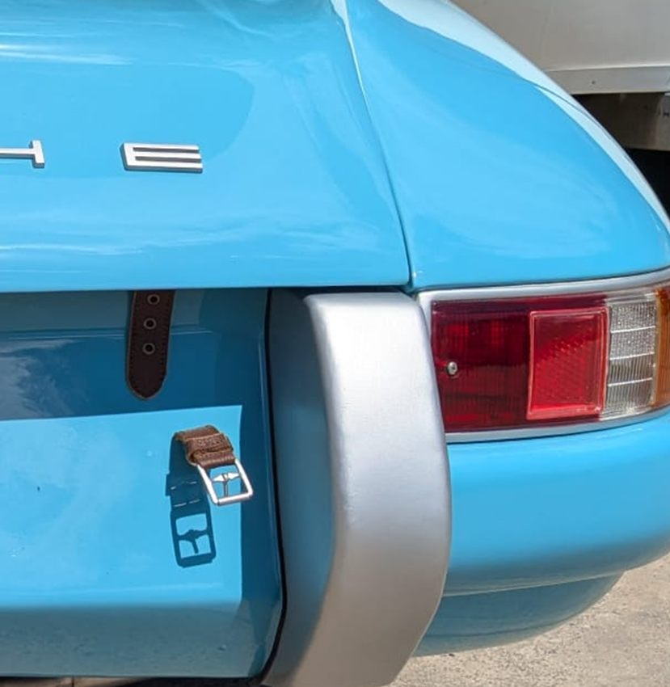
12 · Electrics
A new loom, wire by wire
The original loom came out burnt. The car was born with a generator, since converted to an alternator, and the main feed for the charging system, a thick wire running the whole length of the car, had cooked a run of the harness with it. Rather than chase a fault through scorched wiring, the loom was made again from nothing, by hand, one wire at a time.
A few spare wires were run deliberately and hidden inside, so any future addition can be made cleanly, without a cable taped along the outside looking like an afterthought. Switches that would clutter the dash, for the cooling fan and the hazards, are tucked out of sight to keep the fascia calm.
- Loom: entirely remade by hand, wire by wire.
- Charging: generator converted to alternator.
- Provision: spare wires run internally for future additions (fuel pump, fan, and more).
- Switchgear: a different hazard switch; fan switch hidden; dash kept clean.
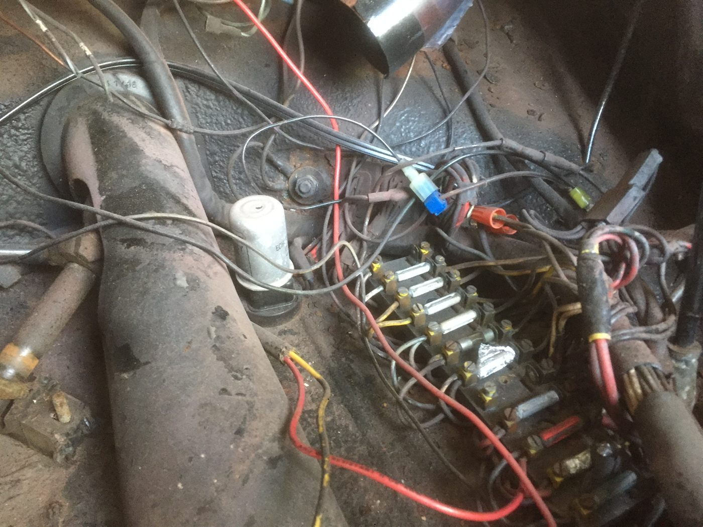
13 · The engine bay, finished
Tidy where no one has to look
Because the cabin has no carpet, the firewall behind the rear seats is left visible from inside. Before the engine went back in, the engine-bay face of that firewall was insulated with Dynamat pads and then covered with a leather panel in a diamond pattern, hiding the deadening and making the bay read as tidily as the cabin. It is finishing applied where most builders would leave bare metal, and it is the last thing anyone would think to check.
The same discipline runs through the bay. The cooling tinware that directs air over the engine was completed rather than approximated, the fuel lines and the second cooler's plumbing were routed to be reached, and the wiring behind the panel is the new loom, not a patch on the old one.
14 · Character and faithfulness
Far from standard, never modern
How far this car sits from the one that left the factory, honestly answered.
The honest answer is: a long way, and yet not at all. The engine and the interior are transformed. But the upgrades do not change how the car reads. The body is little altered beyond the rear flares, the slightly fuller tyres and the deck lid, and every one of those belongs to the vocabulary of period racing, nothing that was not done in the day.
The interior is the largest departure, and only in its colour; in spirit, the cloth and the palette are chosen in the idiom of the era. The dashboard is kept close to original, and the steering wheel, though different, stays a clear relative of the factory wheel. Nothing about the car feels like this decade. It carries the feeling of a 1960s and 1970s car, which was the whole intention. It will simply be faster.
| Kept faithful | Overall body shape, dashboard architecture, steering wheel character, period colour and materials idiom |
|---|---|
| Changed for the better | Engine (2.0 litres, largely new), interior colour and trim, wider tyres, rear flares, lightweight panels |
| In the period idiom | Every visible change follows what was done for racing in the day, not modern fashion |
It's got the feeling of a 60s, 70s car, which is what I wanted. I never wanted it to look modern. It will be faster, though.
Umberto
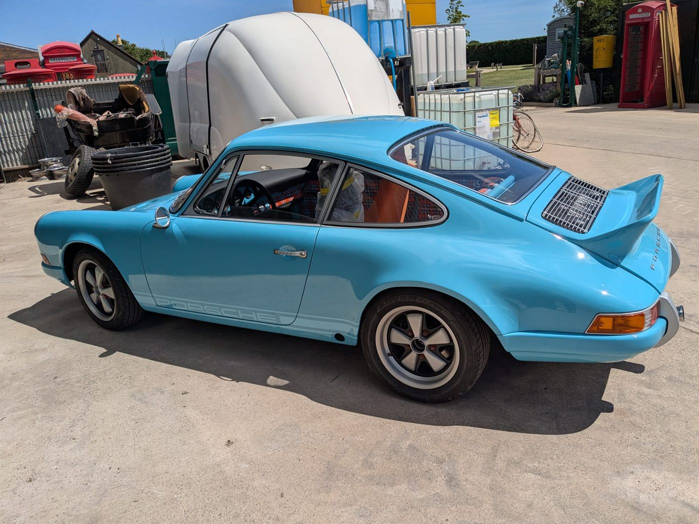
15 · The hardest parts
What the work asked for
Asked to name the most difficult and most satisfying part, the builder names two. The first is the structure: building the jig and getting every fabricated panel to sit exactly where it should. The second is the engine, so heavily modified that reassembling it and having it run cleanly was its own challenge. It ran well from the first time it started, which, given how much of it was new, is the quiet measure of the work.
- The jig and panels: holding the car true and placing hand-made metal precisely.
- The engine: assembling a heavily modified motor that ran well from the first start.

16 · Provenance
Where it came from
An American life, a crossing, and a file of paper that still matches the car.
This was a New York car. Its early paperwork records it registered in New York State and sold on within the state in 1972, and it later passed to a specialist dealer in Los Angeles: the dealer's sticker was still in the corner of the windscreen when the screen came out, and it is photographed earlier in this dossier.
It crossed to England in the summer of 2018, shipped in a container out of Los Angeles and landed at Felixstowe, with the original American title and bill of sale travelling with it. HM Revenue & Customs confirmed in July 2018 that the import had been properly declared and the duty and VAT accounted for, clearing the way for a British registration. It came to the workshop the following year as a project, and it is now registered in the United Kingdom with a V5C in its own chassis number.
The numbers agree with each other, which is the part that matters. The chassis number is stamped on the car; the Karmann body plate carries the same number; and the file follows the same car from New York to the English workshop where it was rebuilt, without a gap. It is in the United Kingdom still.
| Earliest record | Registered in New York State; transferred within New York, January 1972 |
|---|---|
| Later | With a Los Angeles classic dealer, whose sticker remained on the original windscreen |
| Export | Containerised at Los Angeles, discharged at Felixstowe, June 2018 |
| Title | Original American title and bill of sale supplied with the car |
| Import | HMRC import notification cleared July 2018; VAT and duty accounted for |
| Registration | Certificate of conformity obtained; now UK registered, V5C held |
| Into the workshop | July 2019, as a restoration project |
| Where built | England, over seven years |
| Where now | United Kingdom |
| Identity | Chassis, body plate and documents all read 452 279 |
What comes with the car
The history file, the American title and transfer papers, the shipping and customs paperwork, the certificate of conformity, the V5C, the original Karmann body plate, and the photographic record of the restoration from the first day of stripping to the last panel.
17 · Reference
Full specification
Everything above, gathered in one place.
| Marque and model | Porsche 912 |
|---|---|
| Year | 1965 |
| Chassis number | 452 279 |
| Body number | Karmann 452 279 (matching) |
| Engine number | 746389 |
| Registration | UK registered, V5C held |
| Built | England, in the workshop since July 2019 |
| Status | Restoration complete, 2026 |
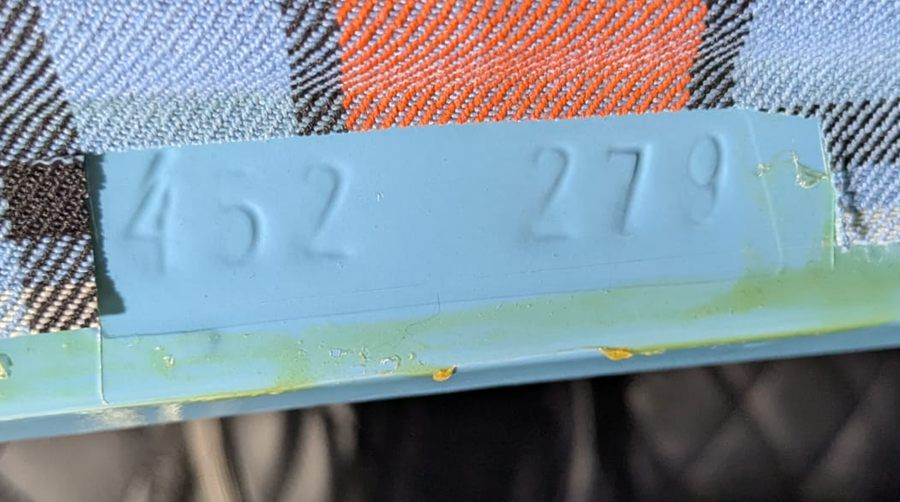
Chassis number 452 279, as stamped on the car. The file that comes with it includes the American title and transfer papers, the shipping and customs paperwork for its move to the UK, and the certificate of conformity ordered for registration here.
| Type | Air-cooled flat four |
|---|---|
| Capacity | 2.0 litres (enlarged from 1.6) |
| Heads | CNC-machined, Swiss-sourced |
| Pistons and rods | Racing pistons, Carrillo rods, balanced |
| Camshaft | Street-performance |
| Timing | Straight-cut gears |
| Induction | Twin Weber 44 IDF |
| Crankshaft | Original, balanced |
| Clutch | Uprated, balanced |
| Gearbox | Fully rebuilt, all bearings renewed |
| Fuel pump | Electric, replacing mechanical |
|---|---|
| Fuel regulation | Malpassi filter with adjustable regulator |
| Air filters | Two K&N |
| Oil cooling | Aluminium cooler, plus remote cooler with fan |
| Exhaust | Stainless steel |
| Fuel tank | New, new sender, filler relocated to the front |
| Body | Steel shell rebuilt on a jig; glassfibre wings, bonnet, bumpers and deck lid, carbon-fibre reinforced; flared rear arches |
|---|---|
| Bushes | Approximately 80 percent polyurethane |
| Dampers | Koni, new, four |
| Torsion bars | Original |
| Trailing arms | Original (one front lower arm replaced) |
| Brakes | New calipers, pads, discs; new handbrake shoes and cables |
| Wheels and tyres | New set, slightly wider, 55-section |
| Colour | Crystal Blue (Glasurit), Porsche factory special-order |
|---|---|
| Headlights | Modified 356 units, clear glass |
| Wiring | New hand-built loom; generator to alternator |
| Glass | New windscreen; original rear, door and quarter glass |
| Interior | Blue leather, orange Alcantara, Scottish tweed; no carpet |
| Safety | Reinforcement bar, four-point harness |
| Instruments | Five gauges (three original plus oil pressure and charging) |
| Unobtainable parts | Small fittings modelled and 3D-printed in the workshop |
18 · The maker
The man who built it
Almost every decision in this document was taken by one person.

Umberto De Caires
He grew up in his father's workshop. His father was an aerospace engineer, and the models, engines and mechanisms on that bench were taken apart until they were understood. He trained as a mechanic in Venezuela on a course built around racing, where tolerances matter and shortcuts cost races, then moved into custom motorcycles, and afterwards to Italy for bodywork and paint. Each discipline added a layer: engine, chassis, surface, finish.
England came next, and years of independent work on classics: Jaguar above all, but also Porsche, Alfa Romeo, Maserati, Triumph, MG and Aston Martin, for owners who cared about what they drove. 912R was built in that English workshop, over seven years, alongside that work.
Last month he left England for Gavorrano, in the Maremma, Italy, where De Caires Classics is opening its own garage. 912R is the car that closes one chapter of that story and opens the next. Everything in the preceding pages is the standard he intends to keep working to.
19 · For the next owner
A car to be understood
What the builder hopes for the car is simple, and worth saying plainly: someone who will take good care of it, who will understand everything that has been done, and who will enjoy it. And, one day, the chance to see it again at a show, in the hands of whoever comes next.
Ask about the next project and the answer is open. There are too many he would like to build, and it depends on what is possible. Pressed for a dream, it is a grand one: to 3D-scan a 1950s Formula 1 car in a museum and build it from scratch, because a car like that cannot be bought, only made. It is the kind of ambition that explains a car like this one.
I hope for someone who will take good care of it, understand everything that has been done, and just enjoy it.
Umberto
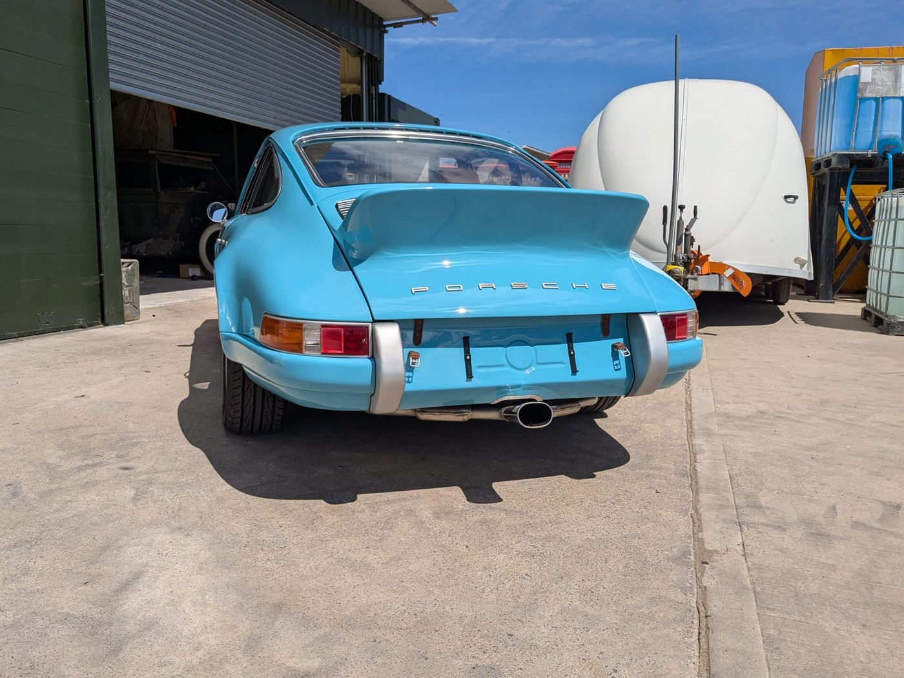
De Caires Classics · info@decairesclassics.com
912R built in England · the workshop now at Gavorrano, Maremma, Italy